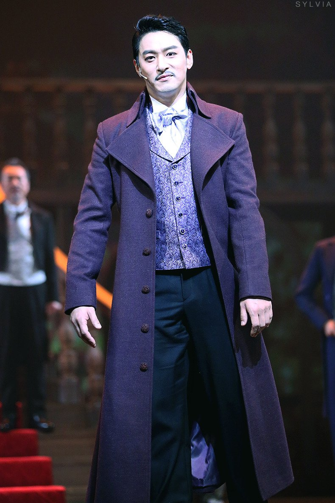

"안정기가 되면 유튜브로 차근차근 알려드리려고 준비하고 있었는데 기사가 먼저 났네요." 의사 민혜연이 11월 14일 SNS에 남긴 첫 문장이에요. 민혜연 주진모 부부에게 첫 아이가 찾아왔다는 소식이 어떤 순서로 알려졌는지, 본인이 직접 밝힌 내용은 무엇인지 정리했어요.
소속사가 먼저 확인했다
14일 임신 소식이 먼저 기사로 나왔고, 주진모 소속사 KHS에이전시가 사실이라고 확인했어요. 소속사는 임신 초기라 조심스러운 단계라며 자세한 내용은 아꼈어요.
📷 사진 1 자리
▲ 사진: 박재환 / CC BY-SA 3.0 / 위키미디어 공용
민혜연이 직접 밝힌 이야기
같은 날 민혜연은 자신의 SNS에 직접 소식을 전했어요. 안정기가 되면 유튜브로 알리려고 준비하고 있었는데 기사가 먼저 났다고 했어요. 그리고 "26년 늦여름에 선물처럼 아기가 찾아왔어요"라고 적었어요.
아이를 갖기로 한 과정도 털어놨어요. 둘이 알콩달콩 사는 게 좋아 미뤄 왔는데, 결혼 8년 차가 되고 나이도 있다 보니 초여름쯤 진지하게 다시 이야기했대요. 올 한 해 노력해 보자고 한 뒤 바로 아기가 찾아와 놀랐지만 감사한 마음으로 준비하고 있다고 했어요. 자세한 이야기는 유튜브에서 풀겠다고 덧붙였어요.
두 사람은 어떤 사이
주진모와 민혜연은 2019년 결혼했어요. 두 사람은 11살 차이예요. 민혜연은 서울대 출신 가정의학과 전문의로, 방송과 유튜브에서 의학 정보를 전해 왔어요.
📷 사진 2 자리
▲ 사진: SYLVIA / CC BY 4.0 / 위키미디어 공용
주진모는 2019년 SBS 드라마 '빅이슈' 이후 연기 활동을 쉬고 있어요.
앞으로 나올 소식은
출산 예정 시기 같은 자세한 내용은 아직 공식적으로 나오지 않았어요. 민혜연이 직접 유튜브에서 이야기를 풀겠다고 한 만큼, 다음 소식은 민혜연 유튜브 채널에서 먼저 나올 가능성이 커요.
정리하면서 눈에 띈 건, 본인이 준비한 방식이 아니라 기사로 먼저 알려졌는데도 민혜연이 같은 날 직접 과정을 차분히 설명했다는 점이에요. '임신 3개월' 같은 구체적인 숫자는 한 매체만 전했고, 본인은 '임신 초기'와 '안정기'라는 말로만 설명했어요. 이런 소식일수록 본인이 직접 쓴 말만 따로 모아 보는 게 가장 정확한 것 같아요.
민혜연과 주진모 부부는 결혼 8년 차에 첫 아이를 갖게 됐고, 자세한 이야기는 민혜연이 유튜브로 전할 예정이에요.
